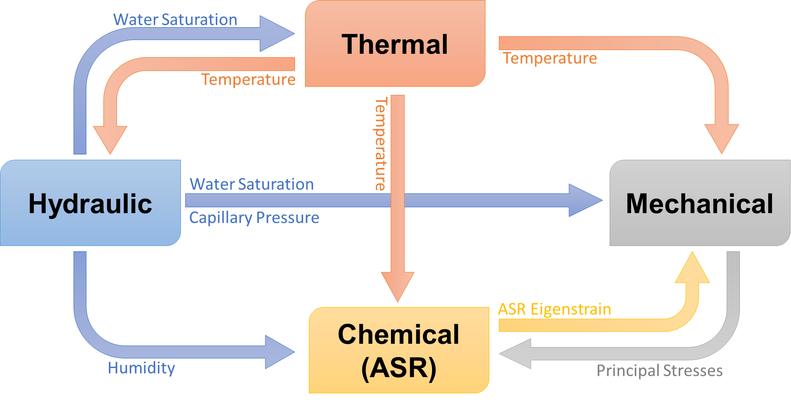
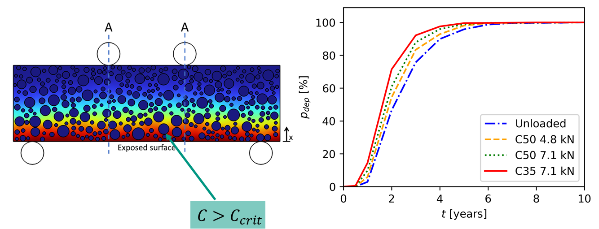

Conference Papers
-
MULTIPHYSICS SIMULATION OF CONCRETE EVOLUTION DUE TO COMBINED ACTIONS OF DIFFERENT DEGRADATION PROCESSES Gereon Wildermann, Ravi Patel, Ludwig Bahr, Frank Dehn
28th International Conference on Structual Mechanics in Reactor Technology, 2025 -
Probabilistic service life prediction of chloride induced corrosion under sustained mechanical loading using multiphysical modeling Gereon Wildermann, Annika Schultheiß, Ravi Patel, Frank Dehn
FraMCoS XII - Fracture Mechanics for Concrete and Concrete Structures, 2025